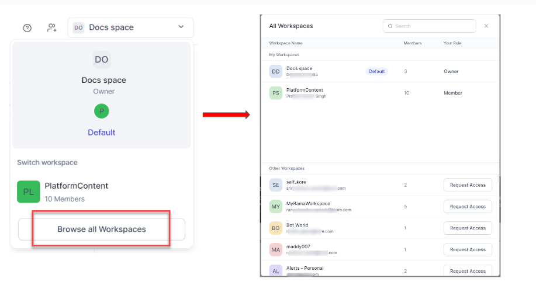
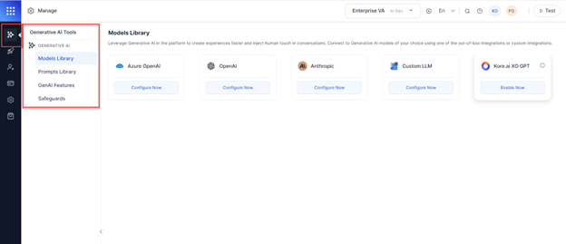
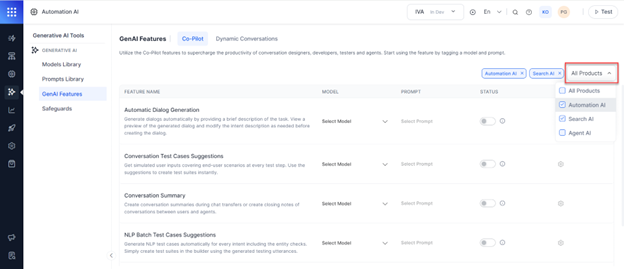
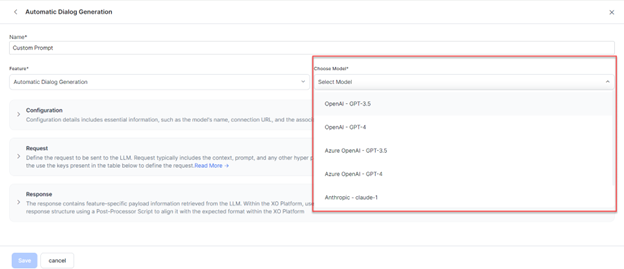
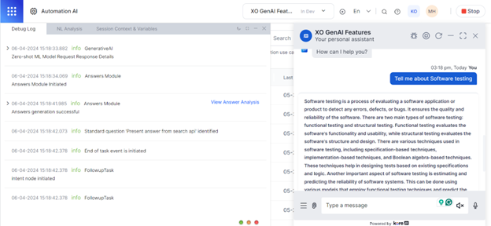
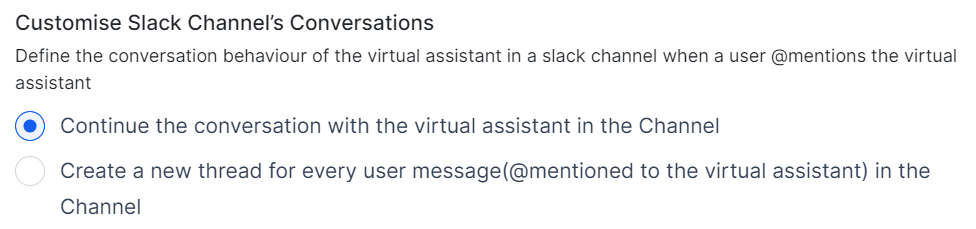

Platform Services Release Notes¶
This document provides information on the feature updates and enhancements introduced in the Platform Services of AI for Service (XO) v11.x releases.
v11.23.0 March 28, 2026¶
Minor Release
This update includes enhancements and bug fixes. The key enhancements included in this release are summarized below.
LLM & Generative AI
Google Gemini Integration
AI for Service now supports Google Gemini as an out-of-the-box (OOB) integration, allowing platform users to access Google Gemini models directly within the Platform across all GenAI features. Users must create and manage their own prompts for their use cases.
- Simple Integration Setup: Configure the integration using an API key.
- Supported models: Gemini 3.1 Pro Preview, Gemini 3 Flash Preview, Gemini 2.5 Pro, Gemini 2.5 Flash, and Gemini 2.5 Flash-Lite.
Channels
Session Isolation by Inbound Number for WhatsApp Infobip Channel
The channel-based session is a new setting in WhatsApp channel configurations that prevents unintended session merging when users interact with multiple inbound numbers in the same app. It uniquely identifies sessions based on inbound numbers, considering each number as an independent channel associated with a specific flow. When you enable it for an existing app, it may disrupt ongoing sessions if the inbound numbers are linked to experience flow. Learn more
Support for Multiple WhatsApp Infobip Accounts
The Platform now supports configuring up to 10 Infobip accounts for the WhatsApp infobip channel, enabling organizations with multiple business units to manage their WhatsApp operations independently. You can map each account to one or more inbound numbers, which are treated as distinct channels at runtime to ensure accurate session handling, flow execution, and response routing. Learn more
App Language
Spanish Language Support
Support for Spanish (Beta) as a new App language is now available via profile menu > app language. Learn more
v11.22.1 March 14, 2026¶
Patch Release
This update includes an enhancement and bug fixes. The key enhancement included in this release is summarized below.
Security & Control
SSO Enhancements: Onboarding and Login Controls
AI for Service supports both Identity Provider (IdP)-Initiated and Service Provider (SP)-Initiated SSO. In the IdP-initiated flow, authentication begins at the IdP, which sends a SAML response to the platform for validation. In the SP-initiated flow, authentication begins at the platform, which redirects the user for authentication before creating a session.
This enhancement adds the following capabilities:
- Restrict Auto-Onboarding: By default, new users are automatically onboarded during IdP-initiated login. When this toggle is enabled, automatic onboarding is disabled, keeping user provisioning fully controlled by your external system.
- Skip 2FA During First-Time Login: Administrators can now skip OTP-based authentication for first-time logins, providing flexibility to align the login experience with your organization's security policies especially where authentication is already enforced at the IdP level.
Channels
Email Channel Enhancements
DKIM Configuration
DomainKeys Identified Mail (DKIM) is now available as a standalone module, allowing users to verify a domain independently before setting up an email channel and reuse it across multiple channels — eliminating repeated verification.
-
Advanced Email Channels: DKIM verification is mandatory for the channel setup. The platform checks for a verified DKIM record and requires completed verification before proceeding.
-
Microsoft Exchange: DKIM signing is optional and off by default. Without it, the platform sends emails through the Microsoft Graph API using Microsoft's native delivery. To enable DKIM signing, you must verify a DKIM record before completing the channel setup.
Manual Email Configuration for Microsoft Exchange
Exchange channels now support manually adding email IDs, in addition to configuring them through a Microsoft 365 Group. Manually added email IDs default to Outbound usage, allowing agents to use them for outbound conversations.
User Identity Source
The platform now supports using the Reply-To address for user and session identification, rather than the From address. This is useful when an intermediary email aggregator is in use, where multiple conversations share the same From address but have distinct Reply-To values. This option is off by default.
Improved HTML Email Processing
The Email channel now efficiently handles large HTML emails. Raw text is extracted for processing while the full HTML structure — including lists, hyperlinks, and text alignment — is preserved for accurate display in Agent Desktop.
Analytics
Task Execution Logs Enhancement
Task Execution Logs now capture execution details for Agent, Prompt, and SearchAI nodes, including LLM calls and any associated pre- or post-processor scripts. These details appear in the API Calls and Script Execution sections, making it easier to analyze execution flow and debug AI agent behavior.
App Settings
Channel-Level Control for Session Closure Messages
Specific channels can now be excluded from receiving session closure messages via the Additional Settings option in the Session Closure Behavior section. When the Send a Message toggle is enabled, users can select which channels should not receive these messages. Email is excluded by default for new apps to avoid unnecessary inbox notifications. For newly added channels, session closure messages remain enabled by default.
v11.22.0 February 28, 2026¶
Minor Release
This update includes enhancements and bug fixes. The key enhancements included in this release are summarized below.
LLM & Generative AI
Change Log Enhancement
Change Logs will track the entire prompt lifecycle, including creation, updates, and deletions, providing a clear, auditable history of all prompt changes.
API
Enhanced User Engagement Trend API (v2)
The User Engagement Trend API now delivers all user engagement metrics through a single endpoint. This includes counts for unique, new, and returning users, along with daily or hourly averages for each category. Learn more
App Settings
Auto-Token Regeneration for OAuth2 Password Grant Type
The Platform now automatically regenerates Auth and Refresh tokens for the OAuth 2.0 Password Grant Type using stored credentials, ensuring uninterrupted service when tokens expire. Learn more
End-to-End Payload Encryption Extended to Additional APIs
Payload encryption is now supported for the LLM and Generative AI Usage Logs API and the Conversation Details and Summary API. When the ‘Enforce Request and Response Payload Encryption’ setting is enabled in the JWT application, and the relevant scopes — Gen AI and LLM Usage Logs and Chat History — are selected, request and response payloads are automatically encrypted and decrypted using the symmetric key associated with those scopes. Learn more
Channels
Typing Indicator Support for MS Teams
The platform now shows typing indicators in MS Teams, providing users with real-time visual feedback as an AI or human agent composes a response. This keeps users informed during the interaction and makes conversations feel more natural. Learn more
Proactive Welcome Message for MS Teams Validation
The MS Teams Channel Adapter now automatically sends a welcome message when the app is installed in the personal scope. This ensures compliance with Microsoft Teams Marketplace validation and certification requirements. As a result, the app distribution process is smoother. Learn more
v11.21.1 January 31, 2026¶
Patch Release
This update includes an enhancement and bug fixes. The key enhancement included in this release is summarized below.
Channels
Right-to-Left Language Support in WebSDK
The WebSDK channel now supports right-to-left (RTL) languages. Responses in Arabic and other RTL languages automatically align in RTL format, improving readability and delivering a more natural user experience.
MS Teams Channel Analytics Enhancement
MS Teams channel analytics now supports the team channel login email ID instead of the alphanumeric channel ID across the platforms. Enable the toggle "Show email ID instead of channel ID" in the channel integration settings to replace channel user ID with email IDs throughout your analytics dashboards. Learn more
Admin Console
Support for External ID in BYOK Configurations
BYOK AWS configurations now include an auto-populated External ID field for secure cross-account IAM role assumption, in line with AWS best practices. Learn more
v11.21.0 January 17, 2026¶
Minor Release
This update includes enhancements and bug fixes. The key enhancements included in this release are summarized below.
LLM & Generative AI
Prompts Library: Usage Status and Association Tracking
The Prompts Library will display "In Use" and "Not in Use" statuses for custom prompts based on actual usage at the feature or node level, replacing the previous "Active" and "Inactive" labels. Learn more
Channels
Email Thread Continuity When Adding Recipients
The email channel now supports adding To, CC, and BCC recipients mid-conversation without breaking the email thread. When users or agents add recipients, the platform maintains the existing thread and preserves conversation context, allowing all participants to join and respond seamlessly. Learn more
Email Channel Session Configuration and Analytics Updates
Changes to channel-based and thread-based session configurations (enable or disable) are now captured in change logs for improved audit tracking. Email Channel analytics updates are reflected in Generative AI Usage Logs and Get Analytics API.
New Channel Integration: Microsoft Copilot
Microsoft Copilot is now available as a communication channel, expanding integration options beyond the existing Microsoft Teams channel. Learn more
App Settings
CVV Data Type in Global PII Settings
The Global PII settings now include a CVV data type for redacting credit card verification values (3 or 4 digits) at entry. This prevents CVV data from persisting in logs or storage, and automatically purges it after session closure. Learn more
Dialog Filter for Locale-Specific Responses
Language Management now offers a Dialog filter, in addition to the existing Language and Component Type filters, for efficiently managing locale-specific responses. Learn more
Localization Support for Standard Responses
Standard Responses now support language-specific configurations across conversation management areas, including Dialog Interruptions, DialogGPT Events, Virtual Assistant Events, Intent Events, and Conversation Events.
Centralized URL Management and Revocation Controls
Admins can now centrally manage security settings for Platform-generated URLs (chat history and attachments). They can configure expiry times and optional access limits at the app level, and instantly revoke all active URLs using an emergency revocation control for enhanced security and compliance. Learn more
Analytics
Unified Interactions Dashboard Availability
The ‘Interactions Dashboard’ has been renamed to “Conversations” and is now accessible to all licensed users under ‘Analytics’ > ‘Overview’. It provides unified access to real-time latency reports and session analytics across all products. Learn more
v11.20.0 December 07, 2025¶
Minor Release
This update includes enhancements and bug fixes. The key enhancements included in this release are summarized below.
LLM & Generative AI
Prompts Library: Search and Filter
The Prompt Library now offers enhanced search, sorting, and multi-select filtering by name, feature, model, type, status, or usage, with a Quick Filter for instant access to system and custom prompts. Learn more
Channels
Enhanced Session Management for Email Channel
The Email Channel now supports more accurate session handling through two new app-level configurations. These improvements prevent unintended session merging, preserve context, and provide a clearer experience across automation and agent workflows.
-
Channel-Based Sessions: Creates a new session based on the "To" email address. Emails sent to different support addresses always start new sessions, keeping unrelated issues separate.
-
Thread-Based Sessions: Creates a new session based on the email thread's Reference ID. Replies within the same thread continue the session, while new threads start new sessions. Available only when Channel-Based Sessions are enabled.
App Settings
Unified Interface for Locale-specific Responses
A new ‘Locale-specific Responses’ section in Languages Management provides a consolidated view of all language-dependent components - Dialog Components, Standard Responses, Content Variables, and Small Talk, streamlining multilingual app development. Developers can now update prompts and messages for all enabled languages from this single interface. Learn more
v11.19.1 November 19, 2025¶
Patch Release
This update includes an enhancement and bug fixes. The key enhancement included in this release is summarized below.
Channels
New Channel Integration: Amazon Connect Chat
Amazon Connect Chat is now available as a communication channel, enabling real-time user interactions with AI Agents. The integration supports both hosted and custom widget configurations. Learn more
v11.19.0 October 25, 2025¶
Minor Release
This update includes enhancements and bug fixes. The key enhancements included in this release are summarized below.
Channels
Multiple Files Upload Support in WebSDK
WebSDK v3 now enables users to upload multiple files simultaneously in a single action. Users can select up to 10 files at once, with each file limited to 25 MB. The platform returns all file URLs as an array for seamless integration with downstream workflows. The maximum file count is configurable to accommodate different organizational needs.
APIs
Public API Response Payload Encryption
AI for Service now supports Response Payload Encryption to protect sensitive data in Public API responses. When enabled, each response is encrypted using a client-provided public key, ensuring that only the intended client can decrypt and access the data. The feature strengthens data confidentiality, maintains integrity across API communications, and provides an additional layer of enterprise-grade security. Learn more
v11.18.0 September 27, 2025¶
Minor Release
This update includes enhancements and bug fixes. The key enhancement included in this release is summarized below.
Channels
Enhanced Custom Email Domain Capabilities
AI for Service now enhances custom domains with advanced capabilities, including email forwarding, domain setup, DKIM, and Flow mapping to improve scalability and brand alignment in enterprise email automation.
Key enhancements:
- Email Forwarding: Centralize email processing by forwarding emails from enterprise domains to a single Kore.ai mailbox.
- Advanced Custom Domain Setup: This new option, in addition to the existing Standard setup, supports up to 50 custom domains and 50 email addresses per domain.
- DomainKeys Identified Mail (DKIM) Support: Secure email authentication is now provided for each advanced custom email domain.
- Flow Mapping by Email ID: Route incoming emails accurately by linking custom domain email addresses to specific Flows. Learn more
v11.17.1 September 15, 2025¶
Patch Release
This update includes enhancements and bug fixes. The key enhancement included in this release is summarized below.
LLM & Generative AI
New GenAI Dashboard for LLM Usage and Performance Monitoring
The new GenAI Dashboard offers comprehensive insights into LLM token usage and performance across AI for Service. Users can track token consumption by modules, models, and features, with detailed analytics available in the Performance Analytics section. This capability enables organizations to effectively manage infrastructure costs, optimize AI performance, and make informed decisions when scaling AI capabilities. Learn more
Manage LLM Token Limits, Usage Cycles, and Notifications
AI for Service now allows users to define token usage limits and usage cycles for all LLM Integrations (except XO GPT). Users can also set up automated notifications when token thresholds are reached, enabling proactive cost management, preventing budget overruns, and supporting informed decisions about scaling AI features based on real usage patterns. Learn more
Enhanced Model Library UI
The enhanced Model Library interface improves LLM visibility and organization by clearly separating configured integrations from available ones. Configured integrations now display token consumption if configured, providing clearer usage insights and easier control over the integration. Learn more
Anonymize Sensitive Data in LLM Calls
The Platform now supports anonymizing sensitive data (entities, tool parameters) before LLM interactions. Users can define regex patterns for redaction, masking, or replacement. When the LLM-layer PII option is enabled, anonymization applies only during language model interactions, with original values restored afterward. Conversations and debug logs always show unmasked data. LLM-layer PII works alongside global PII, with global settings taking precedence. Learn more
Vector Generation Feature Split into Text and Image
The Vector Generation feature is now split into separate Text and Image components, providing independent control over models, prompts, and feature enablement for each content type. The new XO GPT-VDR model generates visual embeddings, while existing configurations are preserved under the Vector Generation – Text feature. Learn more
v11.17.0 August 23, 2025¶
Minor Release
This update includes bug fixes.
v11.16.1 August 11, 2025¶
Patch Release
This update includes bug fixes.
v11.16.0 July 26, 2025¶
Minor Release
This update includes enhancements and bug fixes. The key enhancements included in this release are summarized below.
LLM & Generative AI
Contact Centre AI Filter Added in the GenAI Features Framework
Contact Center AI (CCAI) has been integrated into the product filtering framework for Generative AI Tools along with Automation AI, Search AI, and Agent AI, providing uniform visibility, searchability, and contextual filtering across all products. Learn more
App Setting
Tagalog Language Detection Support
AI for Service now accurately identifies Tagalog, ensuring the accurate classification of Tagalog utterances and enabling seamless multilingual app experiences.
BotKit
BotKit Events for Key Contact Center Actions
BotKit now emits key contact center events (agent acceptance, transfers, session closure, disposition submission, and join/leave actions) with structured JSON payloads, enabling real-time CRM sync via customer-defined logic. Admins can configure event types from the BotKit settings panel, with support for retry mechanisms, custom headers, and full traceability logging. Learn more
v11.15.1 July 12, 2025¶
Patch Release
This update includes enhancements and bug fixes. The key enhancement included in this release is summarized below.
LLM & Generative AI
Enhanced Model Visibility Across GenAI Features
Configured language models are now visible and accessible across all GenAI features, regardless of prompt availability, with streamlined prompt creation workflows. This enhancement ensures users can always see and access their properly configured language models, with clear pathways to activate them through guided prompt creation.
v11.15.0 June 30, 2025¶
Minor Release
This update includes enhancements and bug fixes. The key enhancements included in this release are summarized below.
Audit Logs
Audit Logs for Agent Profile Updates
Enhanced the User Management audit logs to capture all agent profile-related actions, including create, update, delete, activate/deactivate, and role or privilege changes. Each log entry includes a timestamp, the user who performed the action, and the target user's details. The system also logs failed or unauthorized attempts. These updates improve traceability, support compliance, and ensure complete visibility into user management activities. Learn more
App-to-App Communication Enabled for New Apps
App-to-app communication is now supported for newly created apps, enabling one app to call flows, dialogs, automation nodes, and script nodes from another. This allows the reuse of logic, such as queue or skill assignments, using functions like setQueue() or setSkill() across apps. They can be referenced from dialogs or scripts when designing flows in a different app.
Getting Started
Removal of auto purchase of Phone number in the App creation process
The automatic phone number provisioning feature, introduced during app creation, has been removed. Users will now have the flexibility to manually provide a phone number for voice channel testing if needed via the channel configuration section.
Key benefits
- Improves resource efficiency by provisioning phone numbers only when needed.
- Simplifies the onboarding experience.
Channels
Retirement of Skype
Microsoft has officially retired the Skype channel. In alignment with this deprecation, the following changes are being implemented across the platform.
Rebranding
Renaming of Platform Components
As part of the revised product strategy, the XO Platform is being repositioned as AI for Service, aligning it with the broader product suite (AI for Work and AI for Process). This change accurately reflects the platform’s core value proposition and enhances brand consistency across all products.
Learn more
APIs
Support for Proactive Notifications for WhatsApp via Public API
The Proactive Notifications feature for WhatsApp has been enhanced to support multi-user messaging using a public API, enabling businesses to send outbound messages to multiple recipients simultaneously.
Key features
- Multi-user messaging in a single API call.
- JWT-based authentication for secure access.
- Per-client rate limiting for system stability.
- Granular logging for improved tracking and debugging.
v11.14.1 June 14, 2025¶
Patch Release
This update includes enhancements and bug fixes. The key enhancements included in this release are summarized below.
App Language
German Language Support for Apps (Beta)
The platform has enabled German language selection for the App, allowing platform users to access the app in their native language.
Key updates
- The Language selection dropdown has been added to Profile, Login, and Signup pages.
- The "BETA" tag indicates the feature's beta status.
- Dynamic translation of UI elements and content based on the selected language.
Channels
Proactive Notifications Support for Google Hangouts
The platform now supports proactive notifications for Google Hangouts, enabling it to push relevant updates to users without requiring them first to initiate interaction with the bot. This feature enhances user engagement by delivering timely information directly to users. Learn more
v11.14.0 May 31, 2025¶
Minor Release
This update includes enhancements and bug fixes. The key enhancements included in this release are summarized below.
Migration
Migration of Universal Bots from XO10 Bot to XO11 Automation Apps
XO10 Universal Bots act as orchestrators that route user inputs to linked Standard Bots for intent handling. In XO11, this orchestration is supported within a Standard App via DialogGPT, eliminating the need for a separate Universal Bot construct.
This release introduces a guided migration path to help users seamlessly transition XO10 Universal Bots into the XO11 framework. Learn more
Channels
Repeat Bot Response Event now supports SmartAssist Gateway Channel
The platform now supports the SmartAssist Gateway channel for the Repeat Bot Response event. This allows end-users to ask the virtual assistant to repeat its recent responses during a conversation. This support is in addition to the existing voice channels: IVR, AudioCodes, and Twilio Voice. Learn more
Flows
Agent Transfer Node: Restriction on Prompting Tasks and Dialog Configuration
To prevent execution issues where flows unexpectedly return to the welcome message, the Agent Transfer node now includes a note clarifying supported dialog types. When selecting a specific dialog within this node, only preprocessing tasks should be used, not prompting tasks. Prompting tasks, such as those containing entity nodes, can interrupt the flow and prevent the Agent Transfer from executing correctly. Learn more
APIs
Support for Proactive Notifications for Webhook Channel via Public API
The Proactive Notifications feature for Webhook Channel has been enhanced to support multi-user messaging using a public API, enabling businesses to send outbound messages to multiple recipients simultaneously.
Key features
- Multi-user messaging in a single API call.
- JWT-based authentication for secure access.
- Per-client rate limiting for system stability.
- Granular logging for improved tracking and debugging.
Debug Logs API now supports additional SMS Channels
The AI for Service Debug Logs API has expanded SMS channel support to include SMS, Twilio SMS, and Genesys Cloud CX Messaging channels, in addition to the existing WebSDK, IVR, IVR AudioCodes, and SmartAssist Gateway. Learn more
Voice Call Properties
Support for Language-specific Voice Call Properties
The platform now supports language-specific configuration of voice call properties, including prompts and grammar, across IVR-supported components, enabling seamless multilingual IVR bot experiences.
Key Changes
- Platform users can now define unique voice call properties as per the enabled language.
- When a new language is added to a bot, existing voice properties from the selected base language are auto-copied to the new language.
- When adding new components, voice property fields will remain empty by default across all languages, allowing independent language-specific configuration. Learn more
Role Management
Enhanced Permissions for the Billing Module
The Platform has strengthened security by restricting the Billing Module to App Owners and users with custom roles. This ensures sensitive functions are protected while maintaining a streamlined experience for other user roles. Learn more
v11.13.1 May 17, 2025¶
Patch Release
This update includes only bug fixes.
v11.13.0 May 03, 2025¶
Minor Release
This update includes enhancements and bug fixes. The key enhancements included in this release are summarized below.
User Management
Enhanced User Management Accessibility
Previously, the User Management menu option was accessible via the product switcher and Contact Center AI. Now it is located in the left navigation of Automation AI, Search AI, and Agent AI, providing uniform access and improving user experience across the primary modules. Learn more
Role Management
Enhanced Permissions Framework for App Owners
The Platform has strengthened security and updated system roles by restricting certain critical administrative functions to App Owners only, ensuring sensitive app functions are protected while maintaining a streamlined experience for other user roles.
The following permissions are implicitly available only to App Owners and are not available to any other user roles:
- Billing Module Access
- Activation of Free Tokens
- Create New User Role
- App Profile Modification
- Delete App
v11.12.1 April 19, 2025¶
Patch Release
This update includes only bug fixes.
v11.12.0 April 05, 2025¶
Minor Release
This update includes enhancements and bug fixes. The key enhancements included in this release are summarized below.
LLM & Generative AI
Unified Generative AI and LLM Interface
This update introduces a new unified interface for Generative AI and LLM capabilities, logically organized features under product categories (Automation AI, Search AI, Agent AI), and a search bar for quick feature discovery.
Learn more
Admin Console
SSO Compatibility Improvement
The Platform has introduced a new configuration option to enhance Single Sign-On (SSO) compatibility and resolve authentication issues caused by the RequestedAuthnContext parameter in SAML requests. This ensures seamless integration with various identity providers, including Azure AD.
Learn more
v11.11.1 March 15, 2025¶
Patch Release
This update includes enhancement and bug fixes. The key enhancement included in this release is summarized below.
Voice Gateway (v0.9.3-8)
Enhanced Diagnostics for Comprehensive Participant Tracking and Quality Metrics
The Agents tab provides Agents and Supervisors with comprehensive call analytics. It displays key information for all participants, including their status (In-Call/Left), timestamps, and quality metrics (MOS, jitter, packets lost). This enhances troubleshooting by showing detailed call exit reasons and descriptions for each participant. Active participants are indicated with "NA" in the End Timestamp field, while External Agents are labeled with an "External Agent" tag, improving visibility and simplifying the debugging process. Learn more
v11.11.0 March 04, 2025¶
Minor Release
This update include enhancement and bug fixes. The key enhancement included in this release is summarized below.
LLM & Generative AI
Azure OpenAI GPT-4o Mini and OpenAI GPT-4o Mini Support
The Platform now supports the GPT-4o mini model for various GenAI features. The model provides similar responses to GPT-4o at a lower cost and latency, balancing performance and efficiency for real-time applications. The integration does not include system prompts, but it can be used with custom prompts.
Getting Started
Optimized Workspace Switching Experience
The "Browse Workspace" feature has been optimized for a faster and more responsive user experience. Users can easily switch between their existing workspaces, which they are part of, or browse for other workspaces in the same domain and request access to a workspace. Learn more
Flows and Channels
Voice-to-Chat Deflection
The new Voice-to-Chat Deflection feature allows platform users to create conversation flows that seamlessly transition from voice interactions to chat-based interactions within the same context. This feature works only with Kore Voice Gateway Channels (Phone number or SIP Transfer).
Key changes
- The "Deflect to Chat" option is added to the Dialog Builder's "Return to Flow" property with two deflection types - ‘Automation’ and ‘Agent Transfer’.
- The Flow Builder now includes a dedicated "Deflect to Chat" connection path and node type to handle the transition from voice to chat.
Key benefits
- Enhanced customer experience through optimal channel selection.
- Shorted resolution time by offering chat-based interactions when voice queues are long.
Backward compatibility:
- The feature is fully backward-compatible with existing voice implementations.
Voice Gateway (v0.9.3-8)
Spanish Language Support for ElevenLabs Text-to-Speech
Added Spanish language support through ElevenLabs Text-to-Speech integration. This enhancement expands our language capabilities and provides users with high-quality Spanish voice synthesis options.
The ElevenLabs TTS engine option is available in the following locations when Spanish language is selected:
- Start Flow
- Manage Preferences within the Voice Preferences section
- Start node
Voice Library Expansion
- Added comprehensive Spanish/Latin American voice portfolio
- All ElevenLabs Spanish voices are now available in the voice selection dropdown
Voicemail Notification & Recording and Call Metadata Using the 'Utility’ Function
A voicemail notification can be sent using the voiceutils, enabling automated customer notifications for voicemail events.
- message: Before the voicemail is recorded, a customizable prompt, such as "Please leave your voicemail now," is played to customers.
- beepRequired: It controls whether a beep sound plays after the prompt, signaling to customers that the voicemail recording is starting.
- transcriptionRequired: Enables/disables automatic voicemail transcription. When enabled, it generates text transcription upon recording completion.
- notifyUrl: Endpoint for receiving voicemail notifications.
Format:https://your-domain/endpoint - metaInfo: Customizable metadata included in notifications. Learn more
Voicemail Recording API
A new public API endpoint has been introduced to retrieve voicemail recordings. Learn more
Simplified Parameter Updates for ASR/TTS Configuration
When modifying language settings or ASR/TTS parameters in Call Control Parameters, users can now specify the fields to be updated using the minimal required parameters. The system retains all existing parameters. This simplified approach applies to Node-Level and Channel-Level Call Control Parameters, reducing redundancy and streamlining the configuration process. Learn more
Improved Audio Handling During Hold State
This update optimizes audio processing and storage during hold periods. The existing behavior remains unchanged for Consult calls, Conference calls, and Multi-party interactions.
During hold periods, the system:
- Suspends transcription generation for customer audio.
- Suspends transcription generation for agent audio.
- Automatically resumes transcription when the hold state ends.
When a customer is on hold (self-initiated or agent-initiated):
- Temporarily stops recording customer-side audio.
- Temporarily stops recording agent-side audio.
- Automatically resumes recording when the hold state ends.
Answering Machine Detection (AMD) for Inbound Calls
The AMD capability is extended to include inbound call detection, matching the existing functionality available for outbound calls. This feature enables the automatic detection of fax machines during inbound calls.
The AMD detection can now be configured in Dialog Task (first node), Channel override templates, and Bot response configurations.
Recording Control for Outbound Calls
The Transcribe utility function now supports the following when integrated with external agent transfers via SIP Invite:
- Start/Stop recording control
- Pause/Resume functionality
SIP Trunk Availability Monitoring
Added an "Option Ping" checkbox in the SIP Trunk configuration for outbound calls that enables automatic verification of SIP Termination IP address accessibility. Learn more
Show Multiple SIP URIs While Configuring SIP Trunk
While configuring the SIP trunk, multiple SIP URIs are now displayed for Contact Center AI and Agent AI. Users can view the list of SIP URIs configured by the Kore backend team and copy them to update third-party applications. Learn more
Display 'Call Control' Options During the Dialing Stage
The Keypad and Mute options are accessible even when a call is being dialed. This enhancement ensures uninterrupted user interaction with IVR systems, even if the CALL_CONNECTED event and 200 OK status are not received from the AudioCodes SBC.
Key benefits
- Allow seamless IVR navigation without waiting for connection confirmation.
- Reduce disruptions caused by delayed network responses.
- Enhance agent experience by maintaining essential call controls at all times.
Audit Log for SIP Trunk Configuration Changes
An audit log for all SIP Trunk configuration changes is maintained. This feature enables developers and administrators to track modifications, including who made the change and when.
v11.10.0 February 12, 2025¶
Minor Release
This update include enhancement and bug fixes. The key enhancement included in this release is summarized below.
LLM & Generative AI
Support for Provider's New LLM in the Out-of-box Integration Framework
With this update, platform users can leverage the latest LLMs as soon as they become available. The XO Platform now enables the immediate addition of new language models as system models within the out-of-box Pre-built Integration framework.
Key benefits
- Quickly access newly launched language models without waiting for the platform to make the new models available.
- Create custom prompts for new models from scratch or by importing an existing prompt from another model.
- Maintain platform security and authentication standards while eliminating integration delays.
Answer Generation Guardrails
The platform now supports answer generation guardrails to ensure the safety and appropriateness of answers generated by LLMs. Input guardrails check the user input, and Output guardrails verify the generated answer prior to sharing it with users.
Getting Started
Simplified Onboarding Journey and Customizable App Icons
The XO Platform now offers a streamlined onboarding experience with simplified product selection, an improved signup flow, and an easy-to-follow Quick Start & Setup Guide. These changes help platform users get started faster, focus on what matters, and see value sooner.
In addition, the platform allows users to personalize their app icons. They can select from a dropdown of preset icons and colors or upload a custom PNG or JPG icon up to 80x80 pixels in size.
Billing & Payments
Usage Trends Enhancements for Improved Billing Insights
The Usage Trends section now includes a new Billing Session Widget. This widget provides key metrics to help app users easily understand and manage their apps’ usage.
The Widget includes
- Consolidated view of billing sessions, voice sessions, and agent counts.
- Filtering by date range (24 hours, 7 days, 30 days, or custom).
- Clear graphical representation of usage trends.
- Hover tooltips for detailed data points.
Metrics tracked
- Automation AI Billing Sessions: 15 minutes of bot/app interaction.
- API Requests: Each triggered request is counted as a session.
- Voice Gateway Sessions: 15 minutes of voice interaction.
- Agent Count: Concurrent Agent Seats that the customers have subscribed to for the given time.
Kore Voice Gateway (v0.9.3-1)
Audit Log for 'SIP Trunk Configuration' Changes and Proper Failure Reasons
The audit logs now record the following information when the SIP trunk configuration is updated.
- Updated Time Stamp along with Time Zone
- Updated by
Whenever a SIP Trunk or Phone Number configuration fails—whether during the setup of a new one or deletion of an existing one—the system displays the relevant failure reasons.
Mask PII Data in Debug Logs
The user input's Personal Identifiable Information (PII) data will be masked in the debug logs.
General Availability of a Key Feature
We are announcing the general availability (GA) of the DialogGPT Module to all our users.
v11.9.1 January 25, 2025¶
Patch Release
This update includes only bug fixes.
v11.9.0 January 05, 2025¶
Minor Release
This update include enhancement and bug fixes. The key enhancement included in this release is summarized below.
LLM & Generative AI
Enhanced Usage Logs for Guardrails
The Usage Logs now provide more comprehensive insights into guardrails performance and token consumption. These insights enable platform users to better track and analyze the effectiveness of their configured guardrails, identify patterns in breaches, optimize costs, and streamline the debugging process.
Key enhancements
- Failed guardrail tracking with identifiers and failure explanations.
- Analytics table for configured guardrails, outcomes, and risk scores
- Input and output token count monitoring.
- Expanded export columns, including guardrail risk scores and token counts.
Optimized Conversation Context Management
The platform has introduced a Redis-based caching solution to significantly improve conversation context management. This enhancement optimizes the storage and retrieval of conversation history for LLM interactions, reducing latency and resource usage while maintaining context integrity.
Admin Console
Enhanced Get Bots API
The Get Bots API now includes crucial authentication and security metadata for each bot, enabling better management and auditing.
Key updates
- Added fields to bot objects in API response: clientId, clientSecret, jtiClaimEnforced, and jweEncryptionEnforced.
- No changes to endpoint structure (backward compatible).
Key benefits
- Comprehensive bot details, including auth credentials.
- Visibility into per-bot security configurations.
- Streamlined management and compliance workflows.
App Settings
Auto-Save for App Profile Settings
The platform now ensures consistent Auto-Save behavior across all configurations in the App Profile menu of the App Settings page. This update aligns the App Settings page with other areas of the platform, such as the Property Panel and NLP Training Configurations, offering users a seamless and intuitive experience.
Key updates
- Auto-save on blur for App Name, App Description, and other settings.
- Toaster messages to confirm the successful saving of changes.
- Special handling for renaming published apps.
- Removal of the Save button at the bottom of the page.
App Language
Japanese and Korean Language Support in the App (Beta)
The platform has enabled Japanese and Korean language selection for the App, allowing platform users to access the app in their native language.
Key updates
- Language selection dropdown added to Profile, Login, and Signup pages.
- The "BETA" tag indicates the feature's beta status.
- Dynamic translation of UI elements and content based on selected language.
Key benefits
- Improved accessibility for Japanese and Korean users.
- Consistent language selection across the app.
- Leverages existing backend localization for seamless translation.
v11.8.1 December 19, 2024¶
Patch Release
This update includes bug fixes.
v11.8.0 December 11, 2024¶
Minor Release
This update include enhancement and bug fixes. The key enhancement included in this release is summarized below.
LLM & Generative AI
Zero-Shot Enhancements
The Zero-Shot intent detection model has been significantly enhanced to improve contextual understanding and intent-matching accuracy, addressing challenges related to large intent sets and false positives.
Key Updates
- Expanded Input: The enhanced model now incorporates intent descriptions, conversation history, list of intents, and user utterances for more accurate intent recognition.
- New Prompt Structure: A new prompt, "Zero-Shot-V2," is available for XO v10 and v11, enabling platform users to input additional contextual components.
- System Prompts: Pre-built system prompts are provided for out-of-the-box integrations (Azure OpenAI and OpenAI), allowing the users to leverage the enhanced Zero-Shot Model without crafting custom prompts.
- Custom Prompts: Platform users can create custom prompts linked to system models for Zero-Shot, offering full control over prompt design to tailor them to specific features, contexts, and user needs.
- Custom LLM Support: The Zero-Shot ML model can now be used with the Bring Your Own Model (BYOM), enabling platform users to define prompts and leverage the enhanced capabilities with their custom LLMs.
These enhancements significantly improve the Zero-Shot model's ability to accurately identify intents, particularly in complex or nuanced conversational scenarios, while maintaining compatibility with existing configurations.
Rephrase User Query feature is now extended to Search AI
The platform now supports contextual rephrasing of user input for Search AI. The feature is available using the XO GPT model.
Bot Admin Console
Consolidated Billing Session Widget
The Bot Admin Console now includes a Billing Session Widget, providing admins with a consolidated view of key billing metrics across all apps in their workspace. This graphical widget displays:
- Billing Sessions: Total number of completed sessions.
- Voice Sessions: The count of Voice Sessions in a conversation consumed in an App; calculated as every 15 minutes of interaction with the Virtual Assistant or an Agent.
- Agent Count: The count of agents subscribed to the plan for each app.
App Settings
Change Log Improvements: Module Field and Detailed Views
The Change Logs feature has been updated to provide better context and more detailed information about configuration changes made within XO 11.
Key Improvements
- Module Field: Each log entry has a new "Module" field indicating which XO 11 module the change originated from. Possible module values include Automation AI and Global (for changes related to Settings, User Management, Deployment, Billing, Experience Flows, Channels, and GenAI Configs).
- Detailed Views: Log entries now include a "Details" link whenever additional information is available. The link opens a side panel displaying a JSON view of the full change details. It helps access the complete technical information for each change without cluttering the main log view.
v11.7.1 November 18, 2024¶
Patch Release
This update includes bug fixes.
v11.7.0 November 03, 2024¶
Minor Release
This update include enhancement and bug fixes. The key enhancement included in this release is summarized below.
LLM & Generative AI
Amazon Bedrock Integration
XO Platform now offers Amazon Bedrock as an out-of-box (OOB) integration. This integration lets platform users access Amazon Bedrock's models directly from the XO Platform. The users can create custom prompts for their specific use cases and use the connected models across all GenAI features. Note that while Amazon Bedrock is available as an OOB integration, XO Platform does not provide any system prompts or templates. Users can only make use of the model with the help of custom prompts.
Key features:
-
Amazon Bedrock Connection: Connect to multiple Amazon Bedrock models securely using your AWS credentials and IAM role authentication.
-
Integration Setup: Configure the integration by providing an integration name, model details, endpoint, and IAM role credentials.
-
Custom Prompts: Create model-specific prompts for all GenAI features with complete control over prompt design and optimization.
-
Security: End-to-end encryption with secure temporary credential management through Amazon STS.
Key benefits:
-
Access to Amazon's advanced language models.
-
Seamless integration with existing XO Platform features.
-
Flexible prompt customization.
-
Enterprise-grade security.
Channels
Netcore WhatsApp Business Integration
The Platform now supports WhatsApp business messaging using Netcore as a new channel. This integration enables businesses to connect their WhatsApp Business account through Netcore to send text, media, and interactive messages using Virtual Assistants.
Key features:
-
Single API Integration: Manage all WhatsApp conversations and virtual assistants through one API.
-
Rich Messaging Capabilities: Send text messages, share media files, and add interactive buttons and quick replies.
-
Secure Interactions: Built-in end-to-end encryption for secure message delivery.
Email Management Enhancements
Domain Configuration
The enhanced email configuration options allow users to configure both Kore and custom domain email addresses to maintain brand consistency:
Key updates:
-
Add multiple email addresses for Kore domains.
-
Set up verified custom domains.
-
Attach experience flows to specific addresses.
Email Blacklisting
The new Email Blacklist option helps protect your email reputation with administrator controls.
Key features:
-
Block problematic email addresses.
-
Prevent automated responses to blacklisted addresses.
-
Maintain standard processing for verified contacts.
Web SDK
Webchat Theme Enhancement
The XO Platform's Webchat interface now offers enhanced theme management capabilities. The users can preview themes before applying them and customize them to match their brand requirements.
Key updates:
-
Theme Preview and Management: Create, customize, and preview themes before applying them to your webchat interface. Choose from pre-designed templates or customize them as per brand requirements.
-
Theme Options: Create new custom themes, Copy existing themes, Edit theme settings, Preview before applying, and Delete unused themes.
-
Theme Application: Preview themes in the test environment before applying. Changes take effect in live chat after publishing, with a clear indication of your active theme.
Backward compatibility:
- Available for XO v11 while preserving all existing themes and settings.
v11.6.1 October 21, 2024¶
Patch Release
This update include enhancement and bug fixes. The key enhancement included in this release is summarized below.
Bot Admin Console
Enhanced Audit Report
The Audit Report is enhanced to provide better user tracking and accountability. A user email column is added to the audit logs table along with the existing user name as a unique identifier and is also included in the exported audit report. Column names are updated for consistency across the UI and exported files. These enhancements allow for more precise identification of users who made changes, improving traceability and simplifying troubleshooting processes.
Backward compatibility: User email will be available only for new audit entries, not for existing data.
v11.6.0 September 28, 2024¶
Minor Release
This update includes enhancements and bug fixes.
LLM & Generative AI
Dynamic Variables for LLM Integration
XO Platform now supports dynamic variables for integration with Language Models. It allows platform users to use content, context, and environment variables when configuring system and custom LLMs. It helps create more adaptable and secure virtual assistants that can easily adjust to different needs and settings.
Key features:
- Use content and environment variables for Co-pilot features and all variable types for Dynamic Conversation features.
- Configure API keys, endpoints, authentication settings, etc., using variables.
- Test LLM configurations using sample values.
Key benefits:
- Adapt LLM settings across different environments.
- Enhance security by storing sensitive information as environment variables.
- Simplify configuration management and updates.
- Improve testing and development processes.
- Enable flexible deployment for multi-tenant applications.
Enhanced Guardrails Framework for GenAI
This update significantly improves the Guardrails framework, enhancing safety and reliability in GenAI deployments. With optimized screening, better reporting, and broader LLM support, platform users can create more secure and effective AI solutions while improving overall system performance.
Key updates:
- Optimized screening process for faster responses.
- Detailed fallback reporting with specific breach information.
- Improved logging for better visibility into guardrail activities.
- Extended support for custom LLMs.
Key benefits:
- Increased safety and reliability in GenAI deployments.
- Improved developer experience with clearer logging and debugging.
- Faster response times due to optimized screening processes.
- Consistent guardrail enforcement across all LLM types.
Backward compatibility:
- This update applies to all existing bots, ensuring a seamless transition to the improved framework.
Enhanced PII Protection in LLM Interactions
XO Platform now protects sensitive data in LLM calls by adding placeholders. For example, phone numbers are replaced with "[Phone Number]". This enhances privacy and security, reducing the risk of exposing personal information to external LLM services.
Terminology Updates for Improved Clarity
This update includes an important terminology change on the platform:
- Zero-shot Model Naming Consistency: Standardized the name to 'Zero-shot Model' across the platform, eliminating confusion caused by inconsistent naming; for example, ‘Zero-shot Model with OpenAI’ was used under ML > Network Type.
Getting Started
This update includes significant enhancements to the initial user experience, focusing on three key areas: onboarding, signup process, and workspace management. These enhancements make it easier for users to navigate through the initial setup of their Apps, ensuring a smoother start with our platform's AI-powered features.
Onboarding and Setup Guide:
- Optimized layout and readability.
- Improved visibility of critical components.
- Renamed "Guided Onboarding" to "Express".
Email Signup Process:
- New signup are restricted to business email addresses.
- Personal emails can join invited workspaces but can't create new ones.
- Existing users are unaffected.
Workspace Invite UI:
- Redesigned for a more intuitive and efficient experience.
- Modern, cohesive look aligned with overall platform design.
Channels
Sinch Conversational API Integration
XO Platform now supports Sinch as a new channel. Sinch offers a new omnichannel integration that allows developers to enable virtual assistant interactions across multiple channels, eliminating the need to set up and manage each channel individually.
Key features:
-
Omnichannel Support: Manage conversations seamlessly through a single API and deploy virtual assistants across multiple channels, including WhatsApp, Facebook Messenger, Instagram, Viber Bot, Viber Business Messages, Telegram Bot, KakaoTalk, LINE, WeChat, RCS, SMS, MMS, and Sinch Chat.
-
Rich Messaging Capabilities: Send text messages, media, and rich content across various channels. Maintain consistent user interactions with conversation management.
-
Template Compatibility: Ensure compatibility between selected templates and the configured delivery channel in Sinch.
Key benefits:
- Simplify development and deployment with a unified API for multiple messaging platforms.
- Create seamless and engaging user experiences across various channels.
- Enhance security and user authentication in messaging interactions.
Web SDK
Enhanced Webchat Configuration - From SDK to UI
Previously, configuring certain Webchat features required SDK modifications. This update brings key SDK Webchat functionalities into the user interface, allowing for a more unified and user-friendly approach to bot customization.
Key updates:
- Manage Webchat settings directly from the UI without using SDK.
- New UI-configurable parameters include location sharing, Google Maps API integration, Chat history management, Paginated scrolling, Typing indicator customization, Emoji shortcut controls, and Speaker and Send button toggles.
- SDK Override Option to prioritize UI configurations over SDK settings. This option is disabled by default to render the existing customizations and can be enabled for seamless transitions.
Key benefits:
- Faster and simpler Webchat setup and modification process.
- Greater control over Webchat features without SDK knowledge.
- Flexibility to switch between UI and SDK configurations.
Backward compatibility:
- Existing SDK configurations remain intact until the override option is enabled in the UI.
App Settings
Change Default App Language via API
The XO platform now allows users to update the default language of their existing apps using a public API, providing greater flexibility and control over their chatbot configurations.
Key updates:
- Public API for default Language Change.
- Change your app's default language at any time without creating a new bot.
- Enable any published language in the bot as your default bot language.
Key benefits:
- Adapt your chatbot to changing language requirements effortlessly.
- Save development time and resources by modifying existing bots.
- Easily manage multilingual bots within a single app instance.
Note
The changes made via the API are instantly reflected in both In-development and Published copies of your app.
Marketplace
Deprecation of Azure OpenAI and OpenAI from Marketplace Integrations
The Prebuilt Dialog Templates using OpenAI and Azure OpenAI are discontinued. These templates were originally provided to explore the art of possibility when LLMs were relatively new. However, they used older models that the model providers no longer support. Our customers are already exploring the full power of GenAI-powered conversational experiences using the GenAI Node and GenAI Prompt node.
v11.5.1 September 14, 2024¶
Patch Release
This update includes bug fixes.
v11.5.0 September 01, 2024¶
Patch Release
This update includes enhancements and bug fixes. Key enhancements included in this release are summarized below.
LLM and Generative AI
Azure OpenAI GPT-4 Turbo and GPT-4o Support for LLM & Generative AI Features
The Platform now supports two new Azure OpenAI models for various GenAI Features:
- GPT-4 Turbo: It’s a high-speed, accurate model ideal for real-time applications like chatbots, virtual assistants, and content generation.
- GPT-4o: It’s the most advanced multimodal model, which can accept both text and images as input, offering improved efficiency and cost-effectiveness compared to GPT-4 Turbo.
Apps Versioning for GenAI & LLM
The platform now includes GenAI and LLM settings in app versioning, including Model Integrations, Custom Prompts, Feature & Model Prompt mapping, and Safeguards. It allows platform users to manage and track GenAI & LLM configuration changes across different bot/app versions, enhancing control and customization of GenAI features.
Analytics
Enhanced Rate Limit API Response
This update helps API users understand which specific rate limit they've hit, allowing them to plan their request strategies more effectively and reduce errors in API usage.
Specific error messages:
- Per-minute limit: "You've exceeded the per-minute rate limit. Please wait for some time before retrying."
- Hourly limit: "You've exceeded the hourly rate limit. Please wait for some time before retrying."
App Management
App Deletion Feature Update
The platform now allows the deletion of published apps. It provides more flexible app management, improving control over app lifecycle while maintaining data security and user accountability.
Key updates:
- Soft Deletion:
- Initiated by app/bot owners from App Settings.
- Requires email verification.
- 30-day restoration window.
- Post-Deletion:
- The App is invisible in the main interface.
- Runtime features cease.
- Configurations are retained for 30 days.
- Restoration:
- Available in the admin console for 30 days.
- Restores all pre-deletion configurations.
- Notifications:
- Emails to all admin role users.
- Reminders before permanent deletion.
- Data Management:
- Secure storage during soft deletion.
- Permanent deletion after 30 days.
- Subscribed App:
- Deletion is not allowed during an active subscription.
- Restoration after the billing date requires a re-subscription.
- Admin Features:
- New BAC section for deleted apps.
- Audit logs for app restoration.
- New role permission for deleted apps view.
Channels
Customizable VXML Error Threshold in IVR Voice Call Properties
This update removes the restriction of having a fixed VXML Error Threshold at the environment level that applies to all bots, with no option for customization. Platform users now have the flexibility to set the number of retries at the bot level, tailoring it to the specific needs of their system.
Key updates:
- Customizable Error Threshold: Set retry limits based on the system that is being used.
- Default and Custom Options: Choose the default setting or customize the number of retries.
- Retry Range: Customizable range from 1 to 3, 3 being the default.
Backward Compatibility:
- Existing bots default to the Use Default option, which is also included in the bot export/import processes.
Update or Delete Delivered Bot Messages in MS Teams
Bot messages in Microsoft Teams can now be updated or deleted even after they have been delivered to users. This feature provides greater flexibility and control, allowing platform users to disable or remove template messages after a user has taken action on them.
Key updates:
- New ‘channelActionMetadata’ object:
- Captures MsTeams ActivityID, ConversationID, and KoreMessageID.
- Only stores metadata for the latest bot message.
- New channel utility functions:
- channelUtil.getActionMetadata(): Retrieves metadata.
- channelUtil.executeAction(): Updates or deletes messages.
- Automatic updates:
- Chat history updates for modified messages
- Message tags emitted for updated/deleted messages
Getting Started
Enhanced Workspace Switcher Experience
The enhanced Workspace Switcher has a more cohesive, modern experience, making workspace switching more intuitive and efficient for platform users. 
{kind=link}
New Signup Journey Update for Custom Setup
This update helps bridge the gap in the new user Signing up using the Custom Onboarding journey for both Automation AI and Contact Center AI. This Custom Onboarding Journey now automatically triggers a new App creation process, improving the overall onboarding experience.
Key updates:
- Data Persistence:
- Product selection (Automation AI or CCAI) is now saved.
- The onboarding type ("Custom") is recorded.
- Streamlined App Creation:
- The new App creation journey skips product type and journey type selection.
- Uses data from initial onboarding steps.
- Continuous Journey:
- The process now continues directly to the "Naming the App" screen.
v11.4.1 August 11, 2024¶
Patch Release
This update includes bug fixes and minor enhancements.
LLM and Generative AI
Multi-language Support for System and Custom LLMs
The platform now supports all bot languages for both system and custom LLMs.
Key updates:
- Language-specific responses: LLMs can now generate responses in bot languages that LLMs also support.
- Preserved sentiment: Responses maintain original sentiment.
- Expanded language options: Available for all LLM features and prompts.
Key benefits:
- Improved accuracy in non-English interactions.
- Enhanced user experience for global audiences.
Custom LLM Framework Update for GenAI Node
The platform has significantly enhanced the GenAI Node’s custom prompt creation flow. It now supports dynamic variables in the prompt definition, gives full control over the prompt structure, and dynamically defines prompt definitions using JavaScript. These updates provide greater flexibility, better conversation context control, and more sophisticated prompt engineering capabilities, allowing platform users to create more advanced and tailored GenAI applications with improved custom LLM integrations.
Key updates:
- Dynamic variables improvements: Conversation history is redefined as an array of objects. New variables are introduced for Required Entities, Collected Entities, and Conversation History Length.
- Variable support: Context, Environment, and Content variables are now supported in prompts and scripts.
- JavaScript mode: Ability to create prompts using JavaScript and preview option for script validation.
App Settings
Update App Name Post-Publication
Administrators or workspace owners can now modify an app’s name even after publishing it. This helps keep app names current and relevant without disrupting system operations or user experiences.
Key updates:
- There is a new Edit icon for the app name on the App Settings page.
- The app's unique identifier (UUID) remains unchanged, so there will be no impact on the existing integrations and functionalities.
- A new log is added to the Change Logs to highlight the change. For e.g., "App Name is updated from Old_Name to New_Name”.
Channels
MS Teams Modal Dialog Support
The platform now supports Microsoft Teams Modal Dialogs, enhancing the interactive capabilities of virtual assistants deployed on the MS Teams channel. This support allows platform users to handle the 'Invoke' action-type messages used by MS Teams for Modal Dialogs.
Key updates:
- New “Modal Dialogs” toggle: The new toggle is introduced in the channel configuration and is off by default.
- Custom URL configuration: When enabled, platform users can set a Custom URL to which the platform forwards Modal Dialog messages for processing.
- Message handling: The platform maintains the conversation context when handling Modal Dialog messages. It forwards these messages with pre-context to the Custom URL for processing, then relays responses back to the user, maintaining a seamless interaction.
Key benefits:
- Enhanced interactivity: Enables form-based experiences in Teams.
- Seamless integration: Preserves conversation context throughout.
- Improved user experience: Supports more complex interactions.
Backward compatibility:
- This update is available to all existing apps, and it’s disabled by default. If enabled, the app needs to be republished to make these changes take effect.
Admin Console
IP Address Restriction Enhancement
The Admin Console now supports Regex patterns for IP address restrictions. The regex support makes it easier for administrators to manage access across extensive IP ranges.
Key updates:
- Administrators can enter IP ranges using regex patterns when IP Address restriction is enabled.
- Account access is limited to IP addresses matching the provided regex patterns.
Key benefits:
- Reduced manual entry.
- Greater precision in identifying IP addresses through pattern matching.
- Streamlined administration for large IP ranges.
v11.4 July 27, 2024¶
Patch Release
Key features and enhancements included in this release are summarized below.
LLM & Generative AI Framework
OpenAI GPT-4 Turbo and GPT-4o Support for LLM & Generative AI Features
The Platform now supports two new OpenAI models for various GenAI features.
- GPT-4 Turbo is a high-speed, accurate model ideal for real-time applications like chatbots, virtual assistants, and content generation.
- GPT-4o is an advanced multimodal model that can accept both text and images as input, offering improved efficiency and cost-effectiveness compared to GPT-4 Turbo.
Admin Console
Usage Information for Enterprise Accounts
Enterprise users can now view consolidated usage data for all their Bots and Apps in the Bot Admin Console.
Key updates:
- The new Billing menu in the Admin Console left navigation.
- Combined XO10 and XO11 usage statistics on a single page.
- Detailed usage trends are accessible via the Manage button.
Deploy Management
Import, Export, and Publish GenAI and LLM Settings
A new 'GenAI and LLM' option is now available under the 'Settings' section for Import, Export, and Publish operations.
The setting includes:
- Integrations
- Prompts and Requests Library
- Feature Mappings
- Guardrails (for v11 only)
Key benefits:
- Deploy GenAI and LLM features across multiple bots.
- Enhance flexibility in managing GenAI-related settings.
- Ensure seamless operation of runtime features for end-users.
Full vs. Incremental Import:
- Full Import
- Deletes existing models and prompts in the target app.
- Overwrites with models, prompts, and GenAI features from the import file.
- Retains model configurations if a model exists in both source and target
- Replaces all feature mappings, custom instructions, and guardrails.
- Incremental Import
- Keeps existing prompts, only adds new ones.
- Replaces all feature mappings, custom instructions, and guardrails.
- Both import types:
- Preserve existing integrations.
- Import XO-GPT integration as-is.
- Enable imported features with warnings.
- Handle "Azure Open AI by Kore.ai" integration based on token status.
Backward compatibility:
- Existing bots in the Configured state are copied to the Published state.
These changes aim to streamline the deployment and management of GenAI and LLM features across multiple bots and ensure the seamless operation of runtime features for end-users. Learn more
Channels
SMS Channel Configuration
The Platform now offers SMS channel configuration for various service providers. The SMS Channel enables customer communication via text messages. It supports inbound, outbound, or bidirectional messaging on the digital platform. This addition empowers businesses to conduct SMS campaigns and expand their customer communication options. Learn more
Instagram Channel Support
The XO Platform has added Instagram as a new channel option. Users can enable and deploy their virtual assistants on Instagram. Learn more
APIs
SDK Push Notifications Management APIs
The platform has introduced a new set of SDK Notifications APIs to enhance control over push notifications for mobile devices using the Web/Mobile SDK channel.
Key updates:
- A new API scope is added to the Bot builder - "SDKPushNotification”.
- Three new APIs have been introduced:
- DeviceSubscription API: Subscribe the device to SDK push messages and receive subscription status and device details.
- Subscribed User Devices API: Lists all the mobile devices subscribed to SDK push notifications and their OS types.
- DeviceUnsubscription API: Unsubscribes SDK push messages for specific or all devices of a user.
Key benefits:
- Improved user control: Manage users’ push notification preferences more effectively.
- Enhanced flexibility: Manage device subscriptions programmatically.
Public API for SSO Configuration Management
The platform has introduced public APIs for managing Single Sign-On (SSO) configurations. This new API complements existing bot creation and publishing APIs, allowing for a more comprehensive automation of account setup processes. It significantly enhances the platform's capabilities for enterprise customers who require frequent audits or automated deployments.
Key updates:
- Public API for SSO configuration management:
- Fetch the SSO Meta API: Returns the existing SSO configuration along with the URLs.
- Enable SSO API: Enables the SSO configuration for an account.
- Disable SSO API: Disables the SSO configuration for an account.
- Update the SSO Configuration API: Updates the SSO configuration for an account.
- Support for SAML protocol.
Key benefits:
- Streamlined automation: Customers can now fully integrate SSO configuration into their CI/CD workflows.
- Reduced manual effort: Simplifies the audit process by allowing automated SSO setup.
- Increased flexibility: Account administrators can programmatically manage SSO settings.
- Improved efficiency: Facilitates faster and more consistent SSO deployment across accounts.
v11.3.1 July 13, 2024¶
Patch Release
This update includes bug fixes.
v11.3.0 June 29, 2024¶
Patch Release
LLM & Generative AI Framework
Free LLM Tokens for Generative AI Features
Free LLM tokens are now allocated to each newly created app, enabling the exploration of our generative AI capabilities. These tokens allow immediate access to GenAI features without initial setup. Once an app's free tokens are exhausted, users can seamlessly transition to their own LLM configuration. The platform provides clear token usage notifications and an intuitive activation interface. This feature aims to boost AI tool engagement and streamline onboarding for new users. This is available only for the apps created in the Standard workspaces/accounts.
Learn more
Channels
Discontinuation of the Google Business Messages Channel
Google announced the discontinuation of the Google Business Messages channel from July 31, 2024. This channel will be phased out in the coming weeks. If you have alternative chat channels, consider inviting your customers to continue conversations there.
For more details, refer to the Google announcement.
v11.2.1 June 15, 2024¶
Patch Release
This update includes bug fixes.
v11.2 June 01, 2024¶
Patch Release
Key features and enhancements included in this release are summarized below.
LLM & Generative AI Framework
Improved Discoverability of Generative AI Tools
The platform has made it easier to discover and manage the Generative AI capabilities across products. The new Generative AI menu will be available in the primary navigation bar of Automation AI, Search AI, and Agent AI products.
Key updates include:
- Added a new top-level "Generative AI" menu within the Product Switcher, Automation AI, Search AI, and Agent AI areas. This provides quick access to Generative AI settings and tools.

- Reorganized the Generative AI tools into four clear sub-categories:
- Models Library: Access the Models Library (LLM integrations).
- Prompts Library: Access the Prompts Library (default prompts and custom prompts).
- GenAI Features: Enable and configure Co-pilot and Dynamic Conversations capabilities. The available options will be automatically filtered based on which product area the users access this from.
- Safeguards: Manage data privacy with assistant-level and LLM-level anonymization of PII & sensitive data. Set up Guardrails to enforce appropriate AI outputs.
- Smart filtering in the Features section is based on the context from which the users access the Generative AI menu. This will only show the relevant feature options for that product (e.g., Automation, Search, Agent). The users can easily add/remove this filter as needed.

{kind=link}
{kind=link}
Introducing Custom Prompts for Pre-built Models
The platform now supports custom prompts for the prebuilt LLM integrations. This will be in addition to the current support of default prompts. This new capability delivers a consistent prompt engineering experience across custom and pre-built models, making crafting the prompts for various features easy.

{kind=link}
Answers Module Details in the Debug Logs
The Debug Logs presented while testing the app now include detailed logs for the responses from the Search AI product. This includes information on the various stages, response times, and LLM outputs. This enhancement streamlines testing, improves debugging and provides deeper insights into the Search AI performance. 
{kind=link}
v11.1.1 May 11, 2024¶
Patch Release
This update includes bug fixes.
v11.1.0 April 27, 2024¶
Minor Release
Key features and enhancements included in this release are summarized below.
LLM and Generative AI
Custom LLM Integration Support for Rephrase Dialog Responses
Rephrase Dialog Responses now supports Custom LLMs in addition to commercial LLMs. This allows platform users to use the rephrasing feature with their own custom-trained language models and create customized prompts tailored to their specific use cases, models, and linguistic contexts, providing greater flexibility and control over the rephrasing process and conversational experiences.
Custom LLM Integration Support for Answer Generation
In addition to pre-built commercial LLMs, the Answer Generation now supports Custom LLMs. It allows platform users to craft personalized prompts to unlock the full potential of the Answer Generation and deliver uniquely tailored conversation experiences for their users.
Kore.ai XO GPT Supports Vector Generation and Answer Generation
Kore.ai XO GPT now supports Answer Generation and Vector Generation. The XO GPT provides a range of models, including the fine-tuned Mistral-Answers Model for Answer Generation and E5, LaBSE, and MPNet embedding models for Vector Generation. Learn more
Flows & Channels
Updated Default Start Flow
All fields of the default Start Flows can now be edited except the associated channel.
Learn more
Support for Thread Handling for Virtual Assistants in Slack Channels
The Platform now offers native support for threaded conversations in the Slack channel. Users can initiate a new thread from any message within a Slack channel or direct message group.
Additionally, the platform provides extended functionality for developers. It can automatically create a new thread whenever a user @mentions the virtual assistant in a Slack channel. This behavior is configurable, giving developers control over this feature. 
{kind=link}